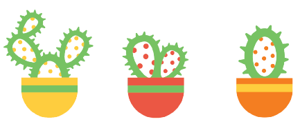

My name is Thao, and I’m a graphic designer who focuses on the whimsical in ordinary things. With a BFA in Visual Communication under my belt, I specialize in illustration, layout, and brand identities. When I’m not designing, I like to collect small trinkets like figurines, cuddle up on the couch for a movie, and attempt to cultivate my little garden of cacti (and hopefully vegetables soon).
At the moment, my biggest design goals reside in learning animation, web development, and photography. As for my personal goal, I’m trying to become a polyglot by learning Spanish (I currently know English and Vietnamese). One by one, I shall master them all!
See my resume for more information.
